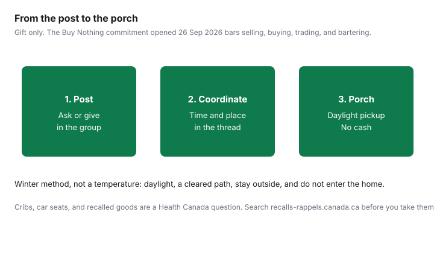

Household Items and Supplies · Canada
Buy Nothing Groups in Canada: How to Get and Give Household Items Free
Buy Nothing is a gift economy with written rules, not a classifieds site that happens to say “free.” The commitment opened on 26 September 2026 bars selling, buying, trading, and bartering. If money changes hands, you have left the project. This page is how to find a Canadian group, how to ask, and which alternatives publish their own fees. It is not a promise that your neighbourhood group has a sofa this week.
What to refuse, including recalled kids’ gear, is the used-goods guide. What to give away before a move is the declutter guide. A library card for movies and magazines is a different free shelf: the library media guide.
Key takeaways
- The Buy Nothing commitment, opened 26 Sep 2026, is give, ask, and share with no selling, buying, renting, trading, bartering, marketing, or fundraising. The app text says participants are 18 or older and take part at their own risk.
- The Facebook-groups page says the first group was July 2013 on Bainbridge Island and that over 8,000 registered Facebook groups exist worldwide. The directory search requires a sign-in. It is not a public city list.
- Global News, posted 26 Nov 2022, reported over 700 Canadian communities on the project’s list then. That is not a 2026 census. The story’s examples of what one Toronto admin gave were baby items and holiday decorations, not a frequency table.
- Freecycle’s homepage the same day said membership is free. The Toronto Tool Library’s homepage said $85 a year and loans up to 7 days. Vancouver Tool Library’s membership page said a $20 co-op share, $55 a year for an individual, and $2 a day for power tools.
- Porch pickup in winter is a method: daylight, a cleared path, stay outside, no cash. No temperature was published as a rule.
What Buy Nothing groups are and how the gift-only rules work
The Buy Nothing Project describes itself as a network of local gift economies. The community commitment on buynothingproject.org, opened 26 September 2026, is the rule set for the app. You participate at your own risk. You keep everything legal. You are 18 or older. Hate speech, threats, and harassment are barred, including gifts that glorify hate groups. You give, receive, and share freely: no selling, buying, renting, trading, bartering, or this-for-that deals, no marketing, and no fundraising. The page says every gift has the same value, which it calls priceless. You may ask and offer without a cap on how often, and you may not get what you asked for.
The same page says Facebook groups use a separate community agreement written by an equity team of admins, in a document the project does not treat as the founders’ text. Read the agreement your group actually posts. A Facebook group that allows sales is not following the commitment above, whatever the group’s name says. Founders Rebecca Rockefeller and Liesl Clark, and the 2013 start, are also in the Global News story posted 26 November 2022.
How to find your Canadian group: the Buy Nothing app vs the official Facebook directory
Two doors. The app is the project’s own platform, and the commitment above is what that page says you accept there. The Facebook door is the directory. The Facebook-groups page, opened the same day, says the first group was created in July 2013 on Bainbridge Island, Washington, and that over 8,000 registered Buy Nothing Facebook groups have been created worldwide. To search by location it tells you to sign in to a Buy Nothing account. This draft did not sign in, so it did not pull a Toronto or Vancouver group name from that directory. Do not join a group because a blog listed it.
Global News, posted 26 November 2022, said there were over 700 buy-nothing gift communities or private Facebook groups across Canada, “according to the Find Your Community List maintained by the Buy Nothing Project.” That sentence is a 2022 count. The project page in 2026 did not repeat a Canadian total. Use 700 only as what that story reported then.
Asking well: posts that get household items (and gratitude etiquette)
The commitment’s practical ask is specific and honest. Name the item, the size, and the neighbourhood you can actually reach. Say whether you can pick up. A post that says “anything for a kitchen” is harder to answer than “a saucepan with a lid, east end, this week.” The page tells you to build trust and to skip spam. Gratitude, on that page, is part of the point of the gift economy, not a cash tip. Thank the giver in the thread. Do not turn the thank-you into a review that pressures the next giver.
If you are giving, photograph the flaw. A chipped bowl that is described as chipped still finds a home. A chipped bowl described as perfect creates the dispute the commitment says to take out of the feed. You can edit or remove your own posts. You can block. Personal grievances stay out of the community feed, in the words of that page.
What Canadian groups give most often: kitchenware, small furniture, kids' gear, moving boxes
This heading is the list people expect. It is not a statistic this draft measured. Global News, in that 26 November 2022 story, quoted Benjamin Lau, then admin of a Buy Nothing group in Toronto, on baby clothing and Christmas and Halloween decorations as things neighbours picked up. Edith Wu, in the same story, talked about baby clothes and toys. Those are examples from one article, not a 2026 ranking of kitchenware versus furniture.
Kitchenware, a small table, kids’ gear, and moving boxes are reasonable asks because they are ordinary household objects. They are not “what groups give most often” in a counted sense. A sofa still needs a person with a vehicle. The furniture guide is the cost after the price is zero. Kids’ gear that is a crib or a car seat is the safety section below, not a cute find. If the group does not have it, the ReStore and thrift guide is the paid secondhand door, and a starter pan is the kitchen budget guide.
Safety and porch-pickup practices for Canadian winters
The commitment says you are responsible for your own in-person choices. A porch pickup that stays a porch pickup has four parts. Agree the time in the thread. Use daylight. Leave a cleared path so nobody is crossing ice you could have salted or shovelled. Stay outside, and do not invite a stranger in or walk into their house. No cash, no “gas money,” no trade. Those are the interactions the commitment bars.
No weather office published a Buy Nothing temperature cutoff, so this page does not invent one. If the path is not safe, move the time. Cribs, car seats, and any product you suspect was recalled belong in a search on recalls-rappels.canada.ca before they belong on a porch. The used-goods guide is the household version of that refusal. A gift does not wash a recall.
Alternatives: Freecycle, Facebook free groups, municipal swap days, and library-of-things lending
Freecycle’s homepage, opened 26 September 2026, describes a grassroots nonprofit movement for giving and getting stuff for free in your own town, with free membership and volunteer-moderated towns. The same page offered a smaller Friends Circle for gifting and lending with people you already know. It displayed 12,293,776 members, 5,333 local towns, and a cost of zero. Those counters move. They are what the homepage showed that day, not a Canadian-only census. The page did not print a full rule book beyond reuse and free membership, so this guide does not invent extra Freecycle rules.
A Facebook “free stuff” group is not Buy Nothing unless it uses those rules. Read that group’s own pinned post. Municipal swap days were not on a city page opened for this draft. Confirm the date on your municipality’s site before you drive. Library-of-things lending is different again: you borrow and return.
| Option | How to join | Rules this page could verify | Best for |
|---|---|---|---|
| Buy Nothing app | The project’s own app. Commitment page opened 26 Sep 2026. | Gift only. 18+. No selling, buying, trading, or bartering. Your own risk. | Asks and gives with neighbours on the app. |
| Buy Nothing Facebook groups | Directory search requires a Buy Nothing sign-in. Over 8,000 groups worldwide on that page. | A separate equity-team agreement for Facebook groups. Read the group you join. | A local group when you can find it in the directory. |
| Freecycle | freecycle.org. Membership free on the homepage opened 26 Sep 2026. | Give and get free in your town. Friends Circle for gifting and lending. Full local rules were not extracted. | A town list outside the Buy Nothing directory. |
| Other Facebook free groups | Whatever that group’s join button says. | Not verified here. A sales thread means it is not the commitment above. | Only after you read that group’s own rules. |
| Municipal swap days | Your city’s page. | No municipal swap page was opened 26 Sep 2026. | A dated local event, after you confirm it. |
| Toronto Tool Library | torontotoollibrary.com. Homepage opened 26 Sep 2026. | $85 a year. Borrow up to 7 days. Power tools can have a maintenance fee listed on the tool. 192 Spadina Avenue. 3 p.m. to 8 p.m., closed Wednesdays. Registered non-profit in 2018. Sharing since 2012. | Tools you would otherwise buy for one job. |
| Vancouver Tool Library | Membership page opened 26 Sep 2026. 3448 Commercial Street. | $20 refundable co-op share. $55 a year for an individual, $140 for an organization. Hand tools free. Power tools $2 a day. Late fees $1 a day for hand tools and $3 a day for power tools. Hours on that page: closed Monday; Tue–Fri 4–8 p.m.; Sat–Sun 10 a.m.–3 p.m., with Sunday holiday exceptions. | The same idea in Vancouver, at that co-op’s prices. |

Sources & date stamps
- Buy Nothing Project, Facebook groups page, opened 26 Sep 2026. First group July 2013, Bainbridge Island. Over 8,000 registered Facebook groups worldwide. Directory search requires sign-in.
- Buy Nothing Project, community commitment and agreement page, opened 26 Sep 2026. Gift-only rules, 18+, own risk, no selling or bartering. Facebook groups use a separate equity-team agreement.
- Heidi Lee, Global News, “What are ‘Buy Nothing’ groups?”, posted 26 Nov 2022. Over 700 Canadian communities on the project’s list at that time. Founders Rebecca Rockefeller and Liesl Clark, 2013. Examples from a Toronto admin included baby clothing and holiday decorations.
- Freecycle homepage, opened 26 Sep 2026. Free membership. Friends Circle. Homepage counters that day: 12,293,776 members, 5,333 towns, cost 0.
- Toronto Tool Library homepage, opened 26 Sep 2026. $85 a year, up to 7 days, 192 Spadina Avenue, hours and phone as in the table.
- Vancouver Tool Library membership page, opened 26 Sep 2026. Share, annual fees, loan fees, late fees, address, and hours as in the table. Loan length was not on that page.
- No municipal swap-day page was opened. Health Canada recall dates were not re-copied; use recalls-rappels.canada.ca.
Frequently asked questions
What is a Buy Nothing group?
It is a local gift economy. The Buy Nothing community commitment, opened 26 September 2026, says members give, receive, and share freely, with no selling, buying, renting, trading, bartering, or fundraising, and it calls gifts priceless. You participate at your own risk, you keep it legal, the app commitment says you are 18 or older, and Facebook groups point to a separate agreement written by an equity team of admins.
How do I find my local Buy Nothing group in Canada?
The Facebook-groups page says the directory search requires a Buy Nothing account sign-in and does not publish a public Canadian city list. Global News, posted 26 November 2022, reported over 700 Canadian communities on the project's list at that time, which is not a 2026 count. The same project page says the first group was July 2013 on Bainbridge Island and that over 8,000 registered Facebook groups exist worldwide.
What can I ask for?
The commitment says you may ask without a limit on how much or how often, and you may not receive everything you ask for. A 2022 Global News story quoted a Toronto admin giving baby clothing and holiday decorations as examples, which is not a 2026 frequency table. Kitchenware, small furniture, kids' gear, and moving boxes are ordinary asks, not a measured ranking, and recalled goods should be skipped.
How do porch pickups work safely?
Coordinate the time in the thread, leave the item where you said you would, and in winter use daylight, a cleared path, and stay outside. Do not enter a stranger's home and do not hand over money, because the commitment says there is no reimbursement. A crib, a car seat, or any recalled product is a Health Canada question before it is a gift, so search the recall database and read the used-goods guide.
What are alternatives to Buy Nothing?
Freecycle's homepage, opened 26 September 2026, says membership is free and that towns are moderated by volunteers. It also offers a smaller Friends Circle for gifting and lending. Municipal swap days were not on a city page opened here, so confirm yours with the municipality. The Toronto Tool Library and the Vancouver Tool Library are two library-of-things examples with fees printed on their own pages.